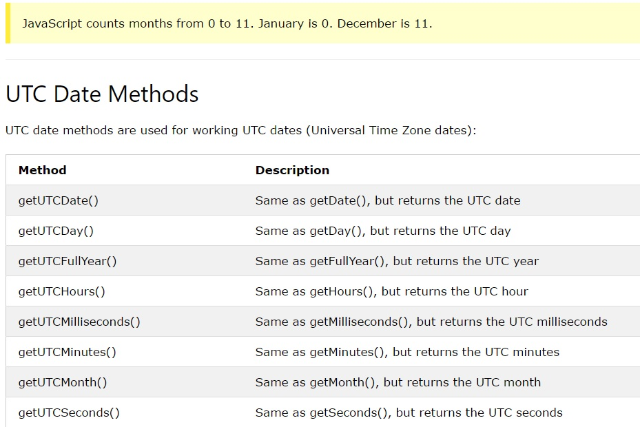

Use date methods to set date values (years, months, days, hours, minutes, seconds, milliseconds).

getTime( ) returns the number of milliseconds since January 1, 1970.
getFullYear( ) returns the year of a date as a four digit number:
Make an array of names and use getDay( ) to return the weekday as a name:
document.getElementById("demo").innerHTML = days[d.getDay()];

setFullYear( )sets a date object to a specific date.
setDate( ) sets the day of the month (1-31): myDate.setDate(15);
With a valid date string, you can use the Date.parse( ) method to convert it to milliseconds.
Returns the number of milliseconds btw the date and January 1, 1970.
Dates can be easily compared.
The following example compares today's date with January 14, 2100:
